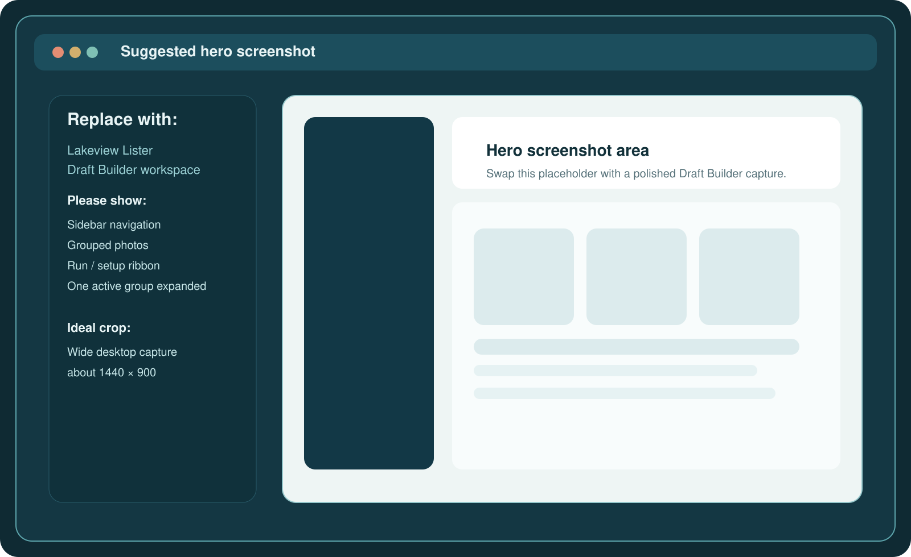
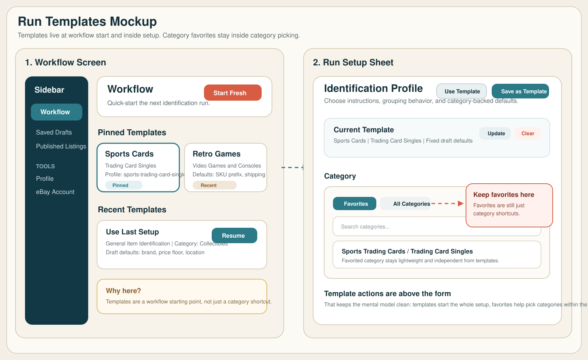
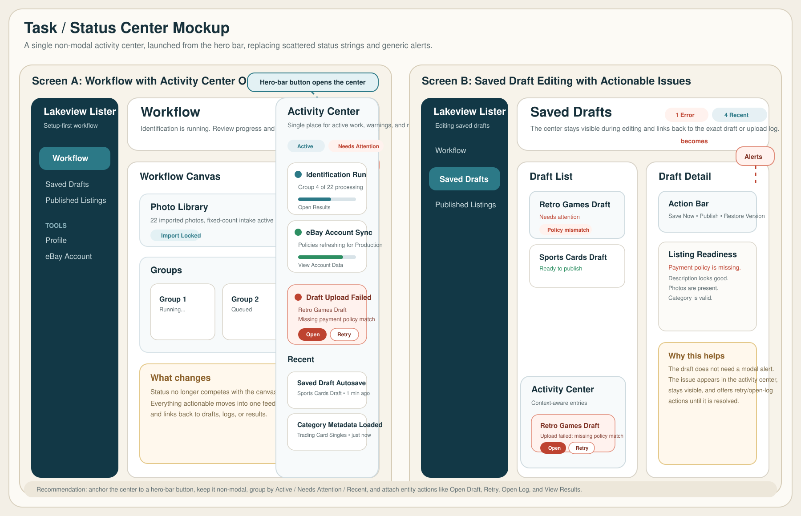

Native app
Built for desktop listing work
Keep photos, drafts, and credentials local on the Mac instead of forcing the workflow into a browser tab.
Native macOS workflow for photo intake, AI drafting, and eBay listing management
Lakeview Lister helps sellers import photos, group items, run AI-assisted identification, refine listing details, save polished drafts, publish to eBay, and come back later to review active inventory.
Native app
Keep photos, drafts, and credentials local on the Mac instead of forcing the workflow into a browser tab.
Bring your own keys
Lakeview Lister currently exposes OpenAI, Anthropic, Google Gemini, and Moonshot from the Profile screen.
eBay focused
Use category, pricing, specifics, publish, and live-listing review workflows instead of a single throwaway AI run.

Why sellers choose it
Photo intake
Build one item per group, adjust photo order, and stage the run before AI ever touches the listing.
Draft generation
Draft Builder and Fast ID let you pick the level of effort you want, from fast triage to listing-ready output.
Operations
Saved Drafts, Published Listings, AI Usage, and Active Listings turn this into a real workflow instead of a one-shot tool.
Get started
Whether you are comparing tools, getting your account ready, or preparing to connect eBay and AI providers, the right next step is already here.
Workflow
Walk through Draft Builder, Fast ID, Saved Drafts, Active Listings, templates, and usage reporting.
Explore workflowSetup
Start with the setup overview, then drill into account creation, AI provider keys, and eBay OAuth setup.
Open setupCompany
Learn more about Burnham Enterprises LLC and the team behind Lakeview Lister.
Meet the companyInside the app
These are the actual modes and tools that matter in the app today, based on the current source and UI labels.
Main workflow
Draft Builder is the full listing workflow. Fast ID is the quick pass for identifying items and rough price ranges before you decide what deserves more editing time.
After the run
The app stays useful after generation. You can edit drafts, review publish history, monitor usage, and work from a live eBay inventory view.
A closer look

